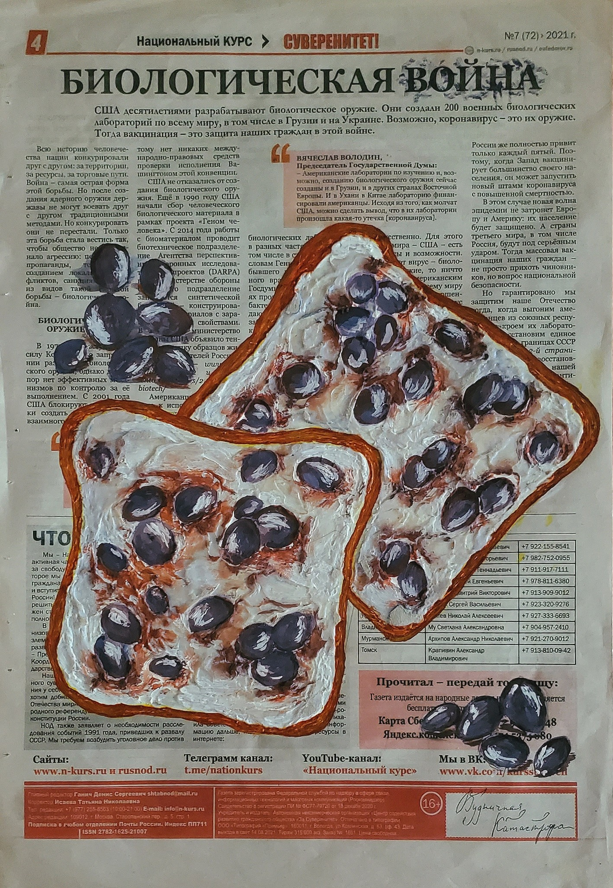
Найденная на полу газета, акварель и акрил
Искусство как способ прожить, запечатлеть и переосмыслить мгновения жизни. Между воспоминанием и образом, ощущением и материей.
— Виктория Леонтьева
Смотреть работы↗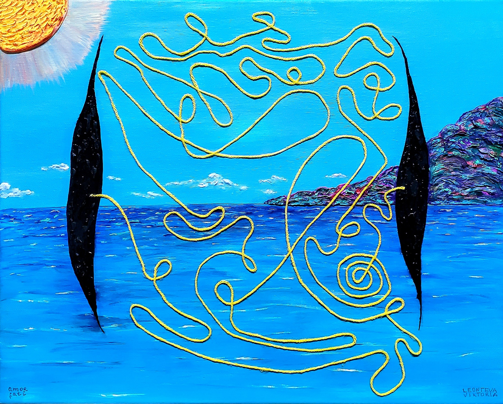
Художественная практика
Для меня творчество начинается с переживания — чувства, мысли, воспоминания или события, которое хочется выразить. Я не выбираю материал заранее. Иногда образ рождается на холсте, иногда — из газетных вырезок, пластилина, найденных предметов или в цифровом пространстве. Форма появляется вслед за тем, что хочется прожить и передать.

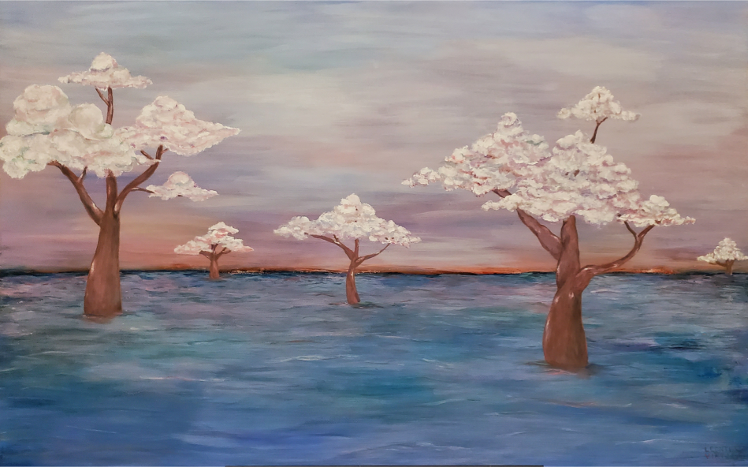
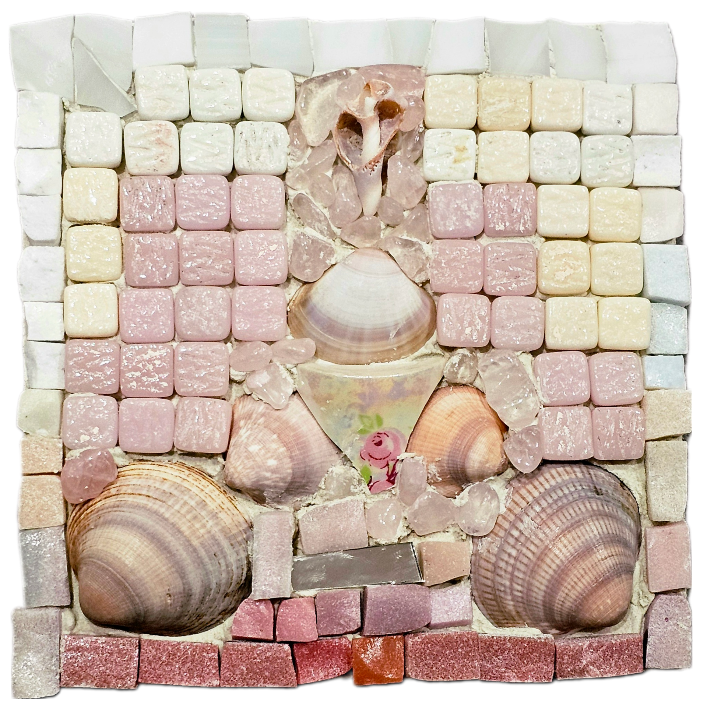
Серия
Работы о родной земле, культурной памяти, пейзаже и личной привязанности к Крыму. Листай стрелками или свайпом, чтобы увидеть все работы.
Проект
Долгосрочный художественный проект, существующий как триптих и развивающийся полиптих. Это пространство процессуальности, расширения и многослойного символического мира.
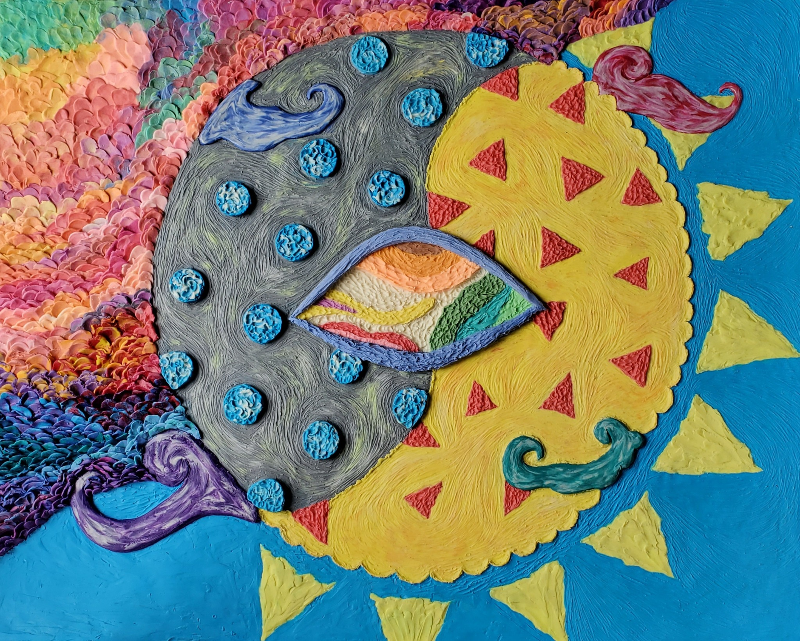
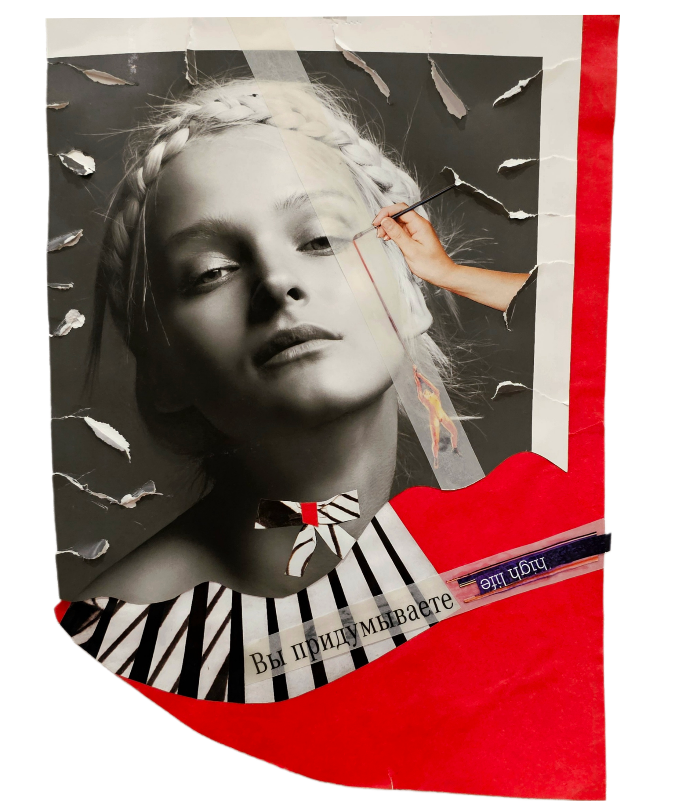
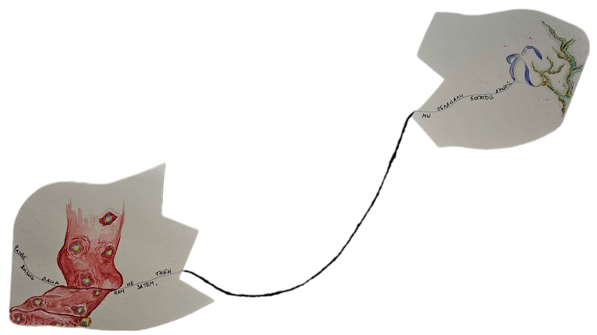
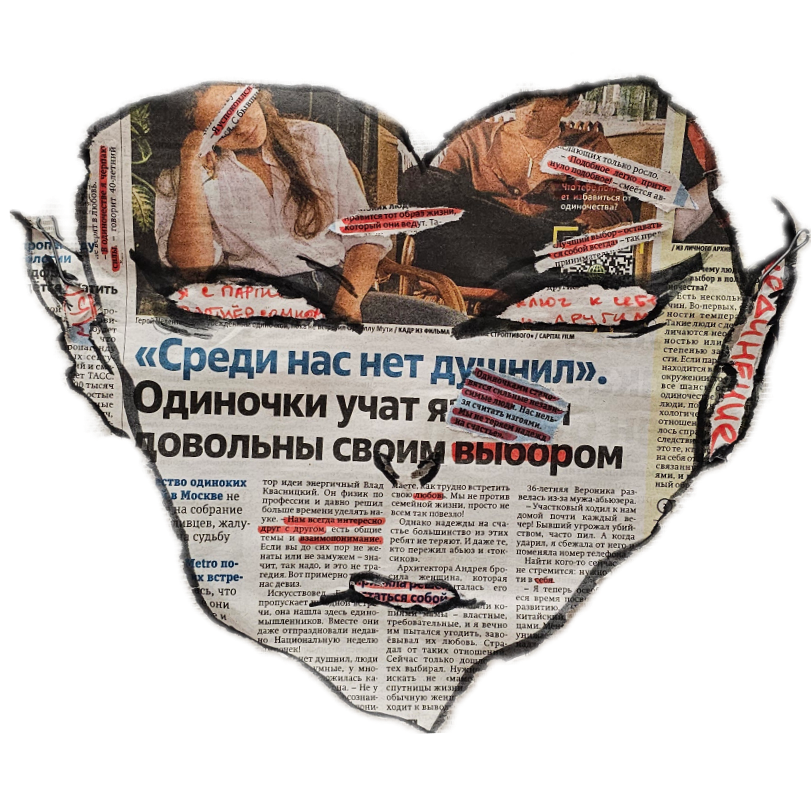
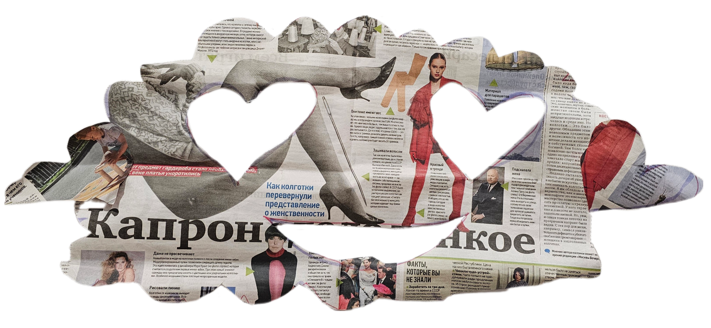
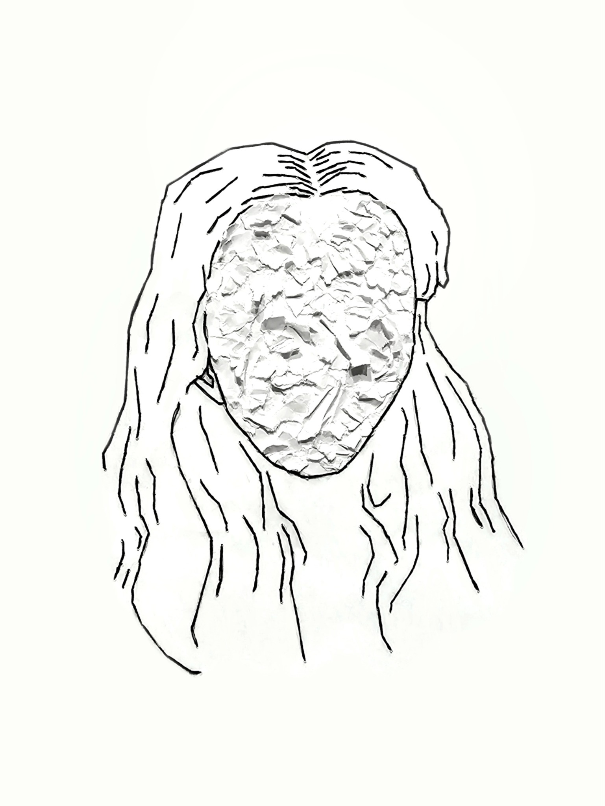
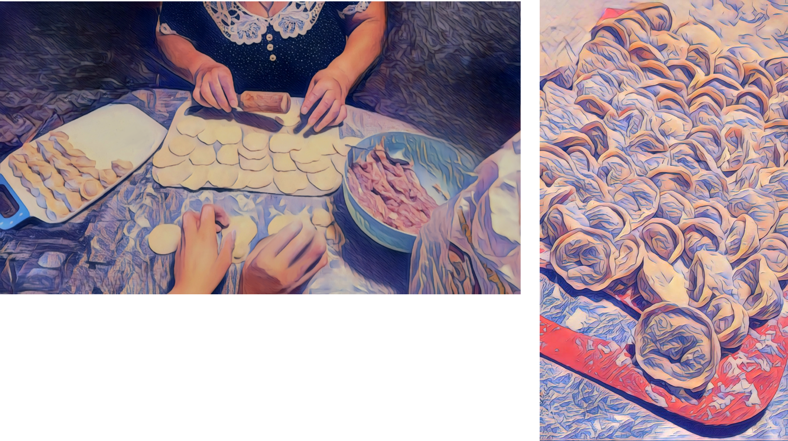
Художественные проекты, объединённые образами, воспоминаниями и идеями. Каждый из них — самостоятельная история.
Проект о родной земле, памяти и культурной многослойности Крыма, где пейзаж становится личным языком принадлежности.
Открыть серию ↗Развивающийся художественный проект: от триптиха к полиптиху, задуманному как произведение длиною в жизнь. Мир образов, символов и переживаний постепенно расширяется.
Открыть проект ↗О художнице
«Я создаю из материи, цвета и холста отдельный мир»
Меня интересует момент, когда личное переживание становится образом, — будь то живопись, коллаж, найденный объект или цифровая работа.
Моя практика связана с исследованием памяти, повседневности, близости и человеческого опыта. Я также изучаю психологию искусства, но для меня творчество существовало задолго до профессиональных определений.
Контакты · Сотрудничество
Открыта к сотрудничеству с галереями, кураторами и арт-резиденциями. По вопросам выставок, совместных проектов и приобретения работ можно связаться со мной по электронной почте.
leonteva.viktoria.artist@gmail.com ↗О произведении